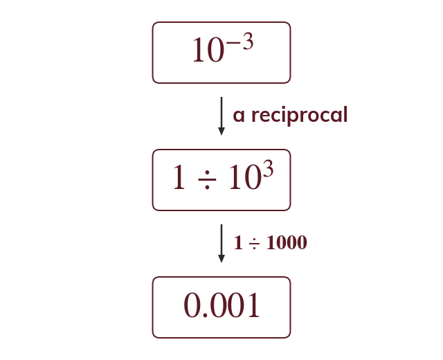

Negative indices
A negative index is a reciprocal: It shifts the digits right, not left. The value stays positive.
A negative index is a reciprocal: means so multiplying by it divides and shifts every digit n places to the right. The value stays positive, and A still sits between and whatever the sign of the index.